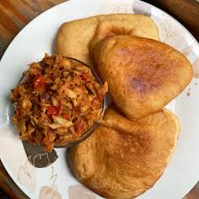

This taste connects me to my family roots because my mom used to make this before she passed.. After eating, I think about color, music, and the Phagwah parade in spring.
We usually stop by Liberty Ave and order saltfish and bake. The bake is warm and golden, and the saltfish is the most flavorful fish you will ever eat.

This taste connects me to my family roots because my mom used to make this before she passed.. After eating, I think about color, music, and the Phagwah parade in spring.